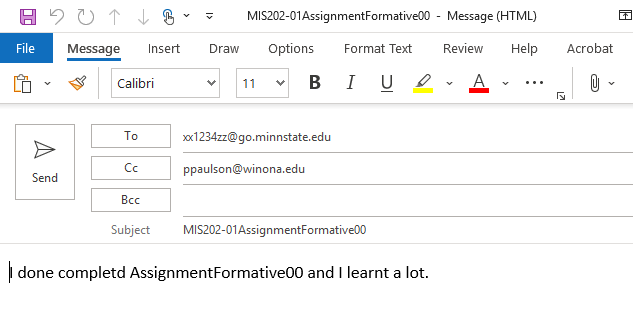

You will create one PDF file that contains screenshots documenting the work completed in this assignment.
This PDF will be uploaded to the D2L Assignment folder titled 'Formative00_Part3'.
Make sure you have Windows 11 installed, and you have the option 'Microsoft Print to PDF' in the Print Dialog Box.
If not, contact a TA or the professor.
 Print dialog box
Print dialog box
ScreenShots->Snipping Tool + OneNote
- Open Microsoft OneNote on your laptop.
- Create a new page and name it
Formative00_Part3.
- Save this
Formative00_Part3.pdf file into your '
- Use the Snipping Tool to take each required screenshot (Ex9, Ex10NYT, Ex10WSJ, Ex10Flip).
- After each snip, press
Ctrl + V to paste the screenshot into your OneNote page.
- Label each screenshot clearly (e.g., "Ex10NYT – New York Times").
- Once all images are added, go to File > Print and choose Microsoft Print to PDF.
- When all screenshots are done you will upload the PDF file to the D2L Assignment folder: 'Formative00_Part3'.
There are two ways to do this:
while you are off-campus, or
in Somsen 301, station 17, using the USB-C dock with the network patch cable designated 'HBC VPN'
If your laptop is wired to the WSU network or connected to the WSU wireless network (Warrior or Wazoo) you must first disconnect, otherwise your computer will not be able to connect to the WSU VPN.
First read (and later refer to) these instructions on connecting to the WSU VPN: https://learn.winona.edu/wiki/VPN
Note: For additional assistance, and if the above hyperlink does not work, search the WSU website for "Cisco VPN"
The following instructions are for use when in Somsen 301.
- Turn off your Wi-Fi on your laptop.
- Connect to the HBC VPN USB Type-C 3.1 cable that attaches to the HP dock
- Wait a few seconds, do a Google search to check your IP address.
- Click the Windows button, type "Cisco AnyConnect" and press enter to bring up the login dialog box.
Note-as of October 2023 make sure 'wsutunnel.winona.edu' appears
- Click the 'Connect' button, if the Username box appears enter your StarID, enter your WSU network password; but make sure to click 'OK':
- The first time you connect to 'wsutunnel' software is downloaded which will require you to restart your computer before continuing.
- After a few seconds the dialog box will minimize and an icon will appear in the Task Tray.

Double click it to open the dialog box. Then click the 'gear' in the lower left to show the Statistics.
- Click the 'Export Stats...' button, save the file 'test.txt' in the folder '
- Open test.txt and print it as a pdf file named Ex8.pdf
It will look like this:

- When done, make sure to turn your computer WiFi on again.
(50) 1. Make sure to print the Cisco VPN Statistics file as 'Ex8.pdf'' and place a copy in the OneNote file in the folder '
Print PDF file Ex8
To succeed in this course, and in your career, it is essential that your computer (hardware and software) is functioning correctly.
In this exercise you will perform a hardware check. At the end of Formative00, Part 3 you are advised to update your software.
Before you perform a hardware check, make sure to connect your laptop to a power supply and restart it, applying any updates.
- After your computer has restarted, click Start, type in
HP PC Hardware
Note: if not found, or to install latest version, click Start, type in "hp pc hardware diagnostics" and click 'Get' to install.
 HP PC Hardware in Microsoft Store
HP PC Hardware in Microsoft Store
- Press Enter
- Select 'System Tests', 'System Fast Test', then click 'Run Once'
- A series of tests will check your hardware performance.
If any test fails, go to tech support in Somsen 207 for assistance in resolving the problem.
 HP PC Hardware application interface
HP PC Hardware application interface
Note- other in-depth testing and computer information is available using the HP Support Assistant.
Do not forget to check Software Center (Start, type 'Software Center') for the latest Windows and other updates.
(25) 2. Use the Snipping Tool to make a screenshot of the 'HP PC Hardware Diagnostics Window' showing that your laptop 'Passed' ALL tests.
Save the screenshot as "Ex9"and place a copy in the OneNote file in your '
' folder.
It can be either a .jpg or .png file.
Screenshot Ex9
Publications:
To keep informed, you are strongly encouraged to read the many magazines available to you at no charge through Flipster.
Through the Krueger Library, you have access to online versions of The New York Times, The Wall Street Journal, and Flipster magazines.
Instructions are below. If you have questions, please contact the Krueger Library.
New York Times:
1) Click on this link: https://libguides.winona.edu/az.php?a=n
2)
From the list choose “New York Times (Institutional Subscription)”
3) For your username, use your StarID@winona.edu. Then choose a password and indicate that you are “Student”. Choose your graduation year.
4) You may also have access to the NYT app through WSU Apps.
*To subscribe, you must sign up on campus.*
(25) 3. After subscriping to the New York Times, login and take a screenshot of the current edition's home page using the Snipping tool.
Save the screenshot as "Ex10" in the OneNote file in your '
Screenshot Ex10NYT
Wall Street Journal
1) Click on this link: Wall Street Journal and search for 'Wall Street Journal', follow the instructions.
2) Enter your StarID and the password associated with your StarID
3) Follow the instructions and fill out the subscription form
4) Users with an existing account have the option to connect to the institutional subscription at the bottom of the “Create Account” page.
5) Repeat these steps every 180 days.
You may also have access to the WSJ app through WSU Apps.
(25) 4. After subscribing to the Wall Street Journal, login and take a screenshot of the front page using the Snipping tool.
Save the screenshot as "Ex10WSJ" and place a copy in your OneNote file in your '
Screenshot Ex10WSJ
The Krueger Library now has access to many popular titles (Business Week, Fast Company, Time, Newsweek, Entrepreneur and many more) on your laptop or iPad! To learn how to access these, please consult this library guide.
https://libguides.winona.edu/c.php?g=611626&p=4247234

(25) 5. After accessing Flipster, open the latest issue of Wired magazine and take a screenshot of the cover using the Snipping tool.
Save the screenshot as "Ex10Flip" and place a copy in your OneNote file in your '
Screenshot Ex10Flip
Composing and sending clear, professional emails is an important skill to learn and master for your career.
Google 'composing effective emails' and read some of the tips provided, such as these 10 tips found at the Seton Hill website.
For this Exercise
and send a professional email to Professor Paulson stating that you have completed Exercise 11 of Assignment Formative00.

Make sure to:
- Use the skills you learned to edit the email.
- Ensure the email has a professional tone.
- Proofread the email, check your grammar and correct any typographic errors.
- Do not change the email subject line!
(25) 6. When your email is ready, click the Send button.
After sending the email check your Outlook account to confirm that you have received a copy of this email.
If you did not receive a confirming email, something is wrong, and you need to troubleshoot and resolve the problem.
(50) Question 1. Final Reflection: What was the most useful thing you learned while completing this assignment?
Tip: You can mention a technical skill you practiced, a tool you explored, or a challenge you overcame.